What would have happened otherwise?
“This seminar made you a better researcher.”
What would you need to know to believe that?
Every causal claim compares the world we saw with a world we did not see.
| Part | Question |
|---|---|
| 1 · Four claims | What would you need to know before believing this? |
| 2 · Potential outcomes | What does “X causes Y” actually mean? |
| 3 · How selection creates bias | Why does the difference in means differ from the effect? |
| 4 · Rohrer’s DAGs | Where does the bias come from, and what should we control for? |
| 5 · Back to the cases | Can we now diagnose the opening claims, and our own? |
Part 1 of 5 · Four claims
For each case: do you believe it? What else could produce the same pattern? What evidence would settle it?
Teens who spend more time on social media report more depressive symptoms.
Many parents, schools, and legislators read this as: social media is making teens depressed.
Give three different stories that produce the same correlation.
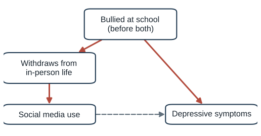
A teen who is bullied at school:
Bullied teens are overrepresented among heavy users. Heavy users look more depressed even if social media does nothing.
Other candidates: family conflict or a parent’s divorce; school closures during COVID, which raised screen time and distress at the same moment.
Early in the pandemic, studies of hospital patients and of people tested for COVID found that COVID-positive patients were less likely to smoke than other patients or people who tested negative.
Some researchers and commentators suggested that smoking, or nicotine, might protect against the virus.
Before asking what smoking does, ask: who ends up in a hospital study?
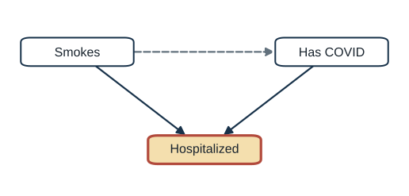
Smoking and COVID both put people in the hospital. Studying only patients conditions on hospitalization.
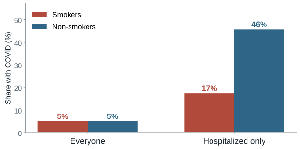
Simulation: smoking has no effect on COVID.
Among patients, a smoker is more likely to be there for some other reason. Smoking looks protective, with no effect at all.
Source: Griffith et al. (2020), “Collider bias undermines our understanding of COVID-19 disease risk and severity,” Nature Communications 11: 5749.
100,000 people. 20% smoke and 5% have COVID, unrelated. Chance of hospitalization: 1%, plus 4 points for smoking, plus 15 points for COVID.
| Group | People | Chance of hospitalization | Hospitalized |
|---|---|---|---|
| Non-smoker, no COVID | 76,000 | 1% | 760 |
| Non-smoker, COVID | 4,000 | 16% | 640 |
| Smoker, no COVID | 19,000 | 5% | 950 |
| Smoker, COVID | 1,000 | 20% | 200 |
Inside the hospital: 17% of smokers have COVID (200 of 1,150) vs. 46% of non-smokers (640 of 1,400).
Knowing a patient smokes makes it less likely that COVID is why they are there. One cause explains away the other.
Invented numbers for illustration; the bar chart on the previous slide uses the same numbers.
Children who watch more television tend to score lower on achievement tests.
Pediatric guidance has long urged parents to limit young children’s screen time.
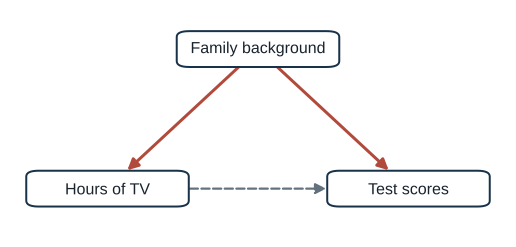
Which families let young children watch more TV? Would those children have scored lower anyway?
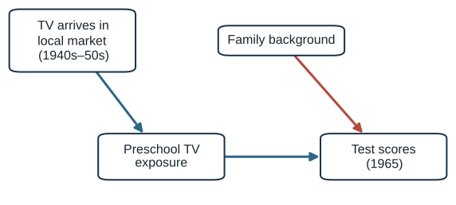
An FCC licensing freeze (1948–52) delayed TV in some markets.
Children born 1948–54 got more or fewer preschool years of TV depending on where and when they were born. Tested in 1965.
No evidence of harm: about +0.02 SD per year of preschool TV; harms larger than 0.03 SD ruled out.
Source: Gentzkow and Shapiro (2008), Quarterly Journal of Economics 123(1): 279–323.
Graduates of more selective colleges earn more than graduates of less selective ones.
Does that gap measure what the college adds?
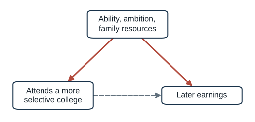
Students choose colleges, and colleges choose students. The gap mixes the college’s effect with who got in.
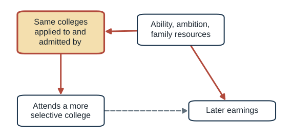
Compare students who applied to and were admitted by the same colleges, but enrolled at different ones.
The selective-college premium largely disappeared. Exception: students from low-income families did earn more.
Source: Dale and Krueger (2002), Quarterly Journal of Economics 117(4): 1491–1527; Dale and Krueger (2014), Journal of Human Resources.
Reverse causation. Does depression drive social media use?
Who got into the data. Did hospital records create the smoking pattern?
A common cause. Does family background drive both TV and scores?
Who chose the treatment. Were elite-college students headed for high earnings anyway?
Today: a language that makes each of these precise, and tells us what evidence would settle them.
Part 2 of 5 · Potential outcomes
A causal effect compares two versions of the same unit: one with the treatment and one without.
You buy Goop’s “Body Vibes” stickers at $6 each. They are “pre-programmed to an ideal frequency” and promise clearer skin.
You wear the Body Vibes stickers.
Identical until the moment you put them on, when a friend secretly swaps them for 10¢ stickers.
The effect of Body Vibes on your skin = your skin in World A − your skin in World B.
Source: Bueno de Mesquita and Fowler, Thinking Clearly with Data, ch. 3, pp. 38–39.
| Symbol | Meaning |
|---|---|
| \(T_i\) | Treatment for person \(i\): 1 = wears Body Vibes, 0 = does not |
| \(Y_{1i}\) | Person \(i\)’s skin if they wear Body Vibes |
| \(Y_{0i}\) | Person \(i\)’s skin if they do not |
| \(Y_{1i} - Y_{0i}\) | The causal effect of Body Vibes for person \(i\) |
Each person has two potential outcomes. Each person shows us only one.
| Person | Group | \(Y_{1i}\) (with) | \(Y_{0i}\) (without) | Effect |
|---|---|---|---|---|
| 1 | Wears | 1 | 1 | 0 |
| 2 | Wears | 0 | 0 | 0 |
| 3 | Wears | 0 | 0 | 0 |
| 4 | Wears | 1 | 1 | 0 |
| 5 | Wears | 1 | 1 | 0 |
| 6 | Does not | 0 | 0 | 0 |
| 7 | Does not | 0 | 0 | 0 |
| 8 | Does not | 1 | 1 | 0 |
| 9 | Does not | 1 | 1 | 0 |
| 10 | Does not | 0 | 0 | 0 |
1 = clear skin. Bold = what happened. Grey = what would have happened.
Body Vibes have no effect on anyone.
| Person | Group | \(Y_{1i}\) (with) | \(Y_{0i}\) (without) | Effect |
|---|---|---|---|---|
| 1 | Wears | 1 | ? | ? |
| 2 | Wears | 0 | ? | ? |
| 3 | Wears | 0 | ? | ? |
| 4 | Wears | 1 | ? | ? |
| 5 | Wears | 1 | ? | ? |
| 6 | Does not | ? | 0 | ? |
| 7 | Does not | ? | 0 | ? |
| 8 | Does not | ? | 1 | ? |
| 9 | Does not | ? | 1 | ? |
| 10 | Does not | ? | 0 | ? |
Half of every row is missing, and so is every individual effect.
“Causal effects as we’ve defined them can never, ever be directly observed.”
You can attend college or not. You can watch the debate or not. Each unit lives in one world.
Causal inference is a missing-data problem: we must fill in the counterfactual with something.
Source: Thinking Clearly with Data, ch. 3, p. 41.
Clear skin: persons 1, 4, 5
3 of 5 = 60%
Clear skin: persons 8, 9
2 of 5 = 40%
Difference in means: +20 points. True effect: 0 for everyone.
Where did the 20 points come from?
Persons 1–5: \(Y_0\) = 1, 0, 0, 1, 1
Clear skin anyway: 3 of 5
Persons 6–10: \(Y_0\) = 0, 0, 1, 1, 0
Clear skin anyway: 2 of 5
The wearers would have had clearer skin even without the stickers. That baseline difference is the bias.
People who already care for their skin (sunscreen, dermatologists, $6 to spare) may be the likeliest buyers. The stickers do nothing unless you change the true effect.
At Thanksgiving, a relative says: “I got the flu shot last year and still got the flu. It doesn’t work.”
Let \(Y = 1\) if you stay healthy. People come in three types:
| Type | Healthy with the shot (\(Y_1\)) | Healthy without it (\(Y_0\)) | Effect of the shot |
|---|---|---|---|
| Always sick | 0 | 0 | 0 |
| Never sick | 1 | 1 | 0 |
| Vaccine responder | 1 | 0 | +1 |
Only responders benefit. A shot can work on average even though some vaccinated people still get sick.
Source: Thinking Clearly with Data, ch. 3, pp. 44–46.
| Person | Type | Group | \(Y_{1i}\) (shot) | \(Y_{0i}\) (no shot) | Effect |
|---|---|---|---|---|---|
| 1 | always sick | Shot | 0 | 0 | 0 |
| 2 | responder | Shot | 1 | 0 | 1 |
| 3 | always sick | Shot | 0 | 0 | 0 |
| 4 | always sick | Shot | 0 | 0 | 0 |
| 5 | never sick | Shot | 1 | 1 | 0 |
| 6 | never sick | No shot | 1 | 1 | 0 |
| 7 | never sick | No shot | 1 | 1 | 0 |
| 8 | always sick | No shot | 0 | 0 | 0 |
| 9 | responder | No shot | 1 | 0 | 1 |
| 10 | never sick | No shot | 1 | 1 | 0 |
1 = stays healthy. Bold = what happened. Grey = what would have happened.
Two responders out of ten: the average treatment effect is 2/10 = +0.2. The shot helps.
| Person | Group | \(Y_{1i}\) | \(Y_{0i}\) |
|---|---|---|---|
| 1 | Shot | 0 | ? |
| 2 | Shot | 1 | ? |
| 3 | Shot | 0 | ? |
| 4 | Shot | 0 | ? |
| 5 | Shot | 1 | ? |
| 6 | No shot | ? | 1 |
| 7 | No shot | ? | 1 |
| 8 | No shot | ? | 0 |
| 9 | No shot | ? | 0 |
| 10 | No shot | ? | 1 |
Healthy: persons 2, 5 → 2 of 5 = 40%
Healthy: persons 6, 7, 10 → 3 of 5 = 60%
Difference in means: −20 points. The shot looks harmful. True effect: +20 points.
Healthy even without the shot: 1 of 5
Healthy without the shot: 3 of 5
The vaccinated group was full of people who get sick anyway. Their baseline was 40 points worse, enough to bury a +20-point benefit.
Who seeks out flu shots in real life? Older people, people with chronic illness, people who get sick often.
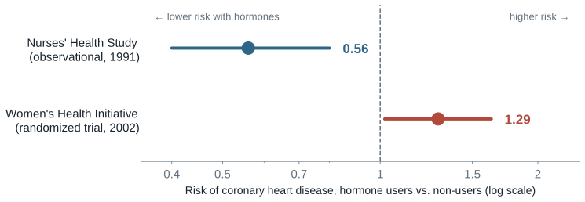
“The most plausible alternative … is that healthier women are selected for such therapy.” — the observational study’s own authors, 1991
Sources: Stampfer et al. (1991), NEJM 325(11) (48,470 nurses, 10 years); Writing Group for the WHI (2002), JAMA; Hernán et al. (2008), Epidemiology.
We can’t see anyone’s individual effect.
We can see the average outcome in the treated group and in the control group.
Treated average − control average = average treatment effect, if the groups are balanced
Balanced: the two groups don’t differ on anything else that affects the outcome.
Body Vibes and the flu shot failed this test. Randomization is how we guarantee it.
This answers the FDA’s question (what happens on average), not a court’s (would this person have been harmed but for the action).
Source: Thinking Clearly with Data, ch. 3, pp. 41–42.
Part 3 of 5 · How selection creates bias
Why does the difference in means differ from the effect, and when does it not?
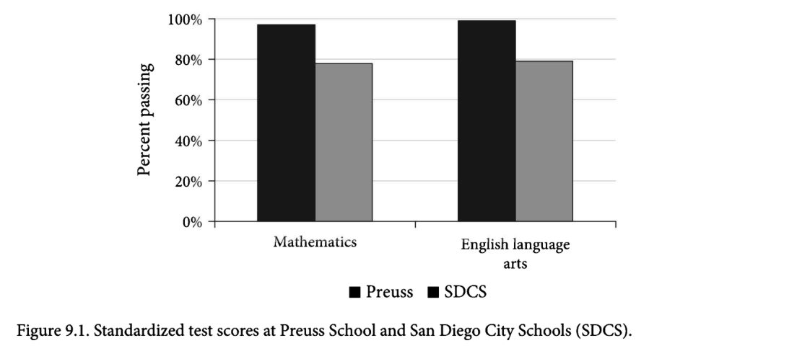
The Preuss School serves low-income students and sends almost 100% to higher education.
Preuss students pass state tests at close to 100%, versus a little under 80% in San Diego City Schools.
Is Preuss a better school, or does it get better students?
Source: Thinking Clearly with Data, ch. 9, Figure 9.1.
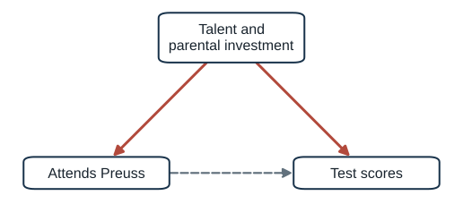
If talent and parental investment drive both who attends and how students score, the raw gap mixes the school’s effect with who got in.
Preuss admits by lottery, but families choose whether to apply.
The book suggests who applies:
“If all children went to the exact same school, the children who are currently at the charter schools would still be above average.”
In other words: Preuss students would have scored higher than others at any school.
Source: Thinking Clearly with Data, ch. 9, pp. 161–162.
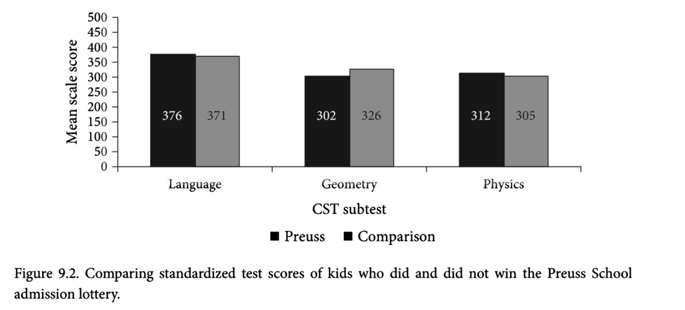
Compare lottery winners with lottery losers. Every applicant was motivated enough to apply; luck decided who got in.
| Test | Winners − losers |
|---|---|
| Language | +5 |
| Geometry | −24 |
| Physics | +7 |
The gap disappears.
Source: Thinking Clearly with Data, ch. 9, Figure 9.2 (data from McClure et al. 2005).
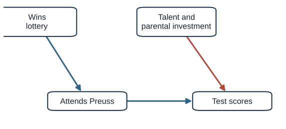
The lottery “broke the link between talent (the confounder) and going to Preuss (the treatment).”
Randomization makes the groups’ potential outcomes equal on average. The baseline difference becomes zero in expectation; what remains is noise.
Source: Thinking Clearly with Data, ch. 9, pp. 167–168.
Ten applicants. Suppose Preuss has no effect, so each child’s score is the same either way (\(Y_1 = Y_0\)).
| Applicant | Talent | Lottery | \(Y_{1i}\) (Preuss) | \(Y_{0i}\) (regular school) | Effect |
|---|---|---|---|---|---|
| 1 | high | Win | 82 | 82 | 0 |
| 2 | low | Win | 64 | 64 | 0 |
| 3 | high | Win | 79 | 79 | 0 |
| 4 | low | Win | 61 | 61 | 0 |
| 5 | high | Win | 76 | 76 | 0 |
| 6 | high | Lose | 80 | 80 | 0 |
| 7 | low | Lose | 63 | 63 | 0 |
| 8 | high | Lose | 77 | 77 | 0 |
| 9 | low | Lose | 66 | 66 | 0 |
| 10 | high | Lose | 74 | 74 | 0 |
At a regular school, winners would have averaged 72.4 and losers 72.0. Same talent mix (3 high, 2 low). Difference in means = 0 + 0.4 of noise.
Invented numbers for illustration.
The lottery balances everything, measured or not, including the score each child would have gotten anyway. Applicants still differ from non-applicants.
Earnings gap \(=\) effect of the college on its graduates \(+\) how they would have done anyway
Elite-college students were already more able, ambitious, and advantaged.
The baseline-difference term is large and positive.
Students who looked alike to admissions offices.
The baseline difference shrinks, and so does the premium (except for low-income students).
A feature that affects treatment and, separately, the outcome.
Talent → Preuss; talent → scores.
Health-consciousness → hormones; health-consciousness → heart disease.
The outcome affects treatment.
Civil war damages the economy.
Depressed teens turn to social media.
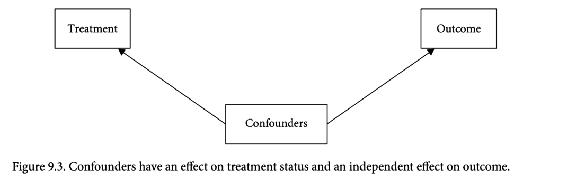
Source: Thinking Clearly with Data, ch. 9, pp. 168–170, Figure 9.3.
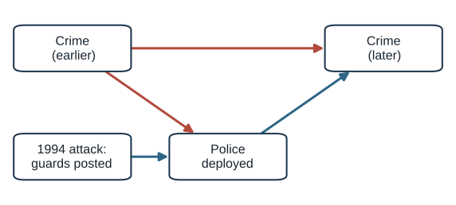
Cities and blocks with more police often have more crime, because police go where crime is.
After the 1994 AMIA bombing in Buenos Aires, every Jewish institution got 24-hour police guards.
Car thefts on protected blocks fell about 75%, with no detectable change one or two blocks away.
Source: Di Tella and Schargrodsky (2004), American Economic Review 94(1): 115–133.
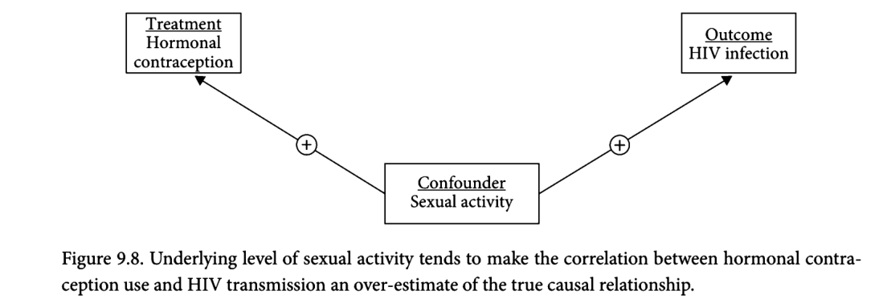
Women using hormonal contraception were twice as likely to acquire HIV from infected partners.
Sexual activity → choosing contraception (+)
Sexual activity → HIV risk (+)
(+) × (+) = positive bias. The doubling is probably an overestimate.
Source: Thinking Clearly with Data, ch. 9, pp. 179–181, Figure 9.8.
Middle-aged men who take statins are less likely to die of heart attacks.
Statin users had higher cholesterol before they started taking statins.
And if cholesterol were measured after treatment began?
Which units end up in our data?
Archive survival, query rules, publication, moderation.
Threatens what the data can represent, and can create spurious associations.
Which units end up treated?
Talent, ideology, health, intention.
Creates baseline differences between the groups we compare.
In both cases, a process we did not control decides what we observe. Part 4 shows they have different shapes.
Part 4 of 5 · Rohrer’s DAGs
I cannot randomize. Which variables should I control for, and which should I leave alone?
Many important questions cannot be randomized:
“It is impossible to infer causation from correlation without background knowledge about the domain.” The question is whether that knowledge is stated openly.
Source: Rohrer (2018), pp. 27–28.
Surrogate interventions
Manipulate a lab proxy instead of the real cause: priming people to feel lower in class instead of studying social class.
Is the proxy the cause you care about?
Avoiding causal language
“Associated with… future experiments are needed.”
The question is still causal, and readers read it causally.
Throwing in controls
Control for whatever is in the data set, because more control seems safer.
Rohrer: “a methodological urban legend at best.”
Which of these have you seen in communication papers?
Source: Rohrer (2018), pp. 27–28; Piff et al. (2010); Achen (2005) on “garbage-can regressions.”
Source: Rohrer (2018), pp. 28–31.
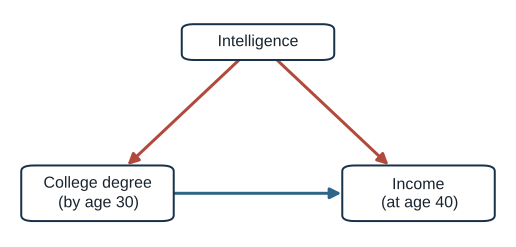
People with a college degree by age 30 earn about $1,500/week at 40; people without one earn about $700.
The $800 gap combines two paths:
Source: Rohrer (2018), Figure 1 and p. 28.
| Structure | Form | Open with no control? | Controlling for the middle variable… | Example |
|---|---|---|---|---|
| Chain | X → M → Y | yes (causal) | blocks part of the real effect: overcontrol | charter → AP classes → scores |
| Fork | X ← C → Y | yes (non-causal) | removes the bias | parental wealth → patience, SAT |
| Inverted fork | X → C ← Y | no | creates bias: collider bias | rigor → publication ← innovation |
Every path, however long, is built from these three pieces.
Source: Rohrer (2018), p. 30 (following Elwert 2013); Thinking Clearly with Data, ch. 9, p. 181.
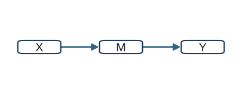
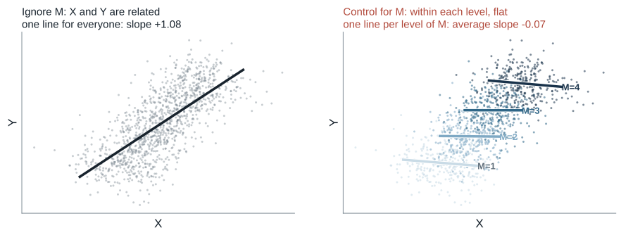
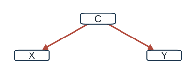
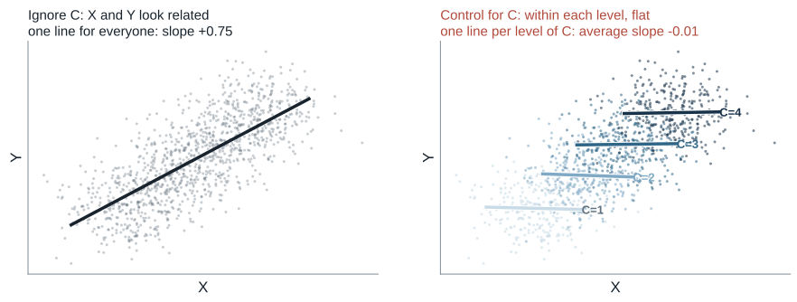
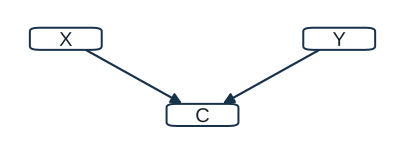
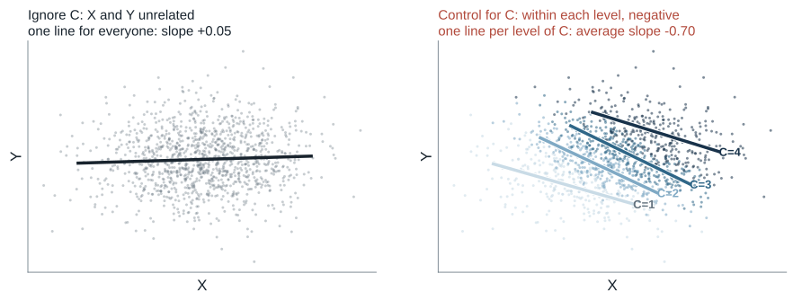
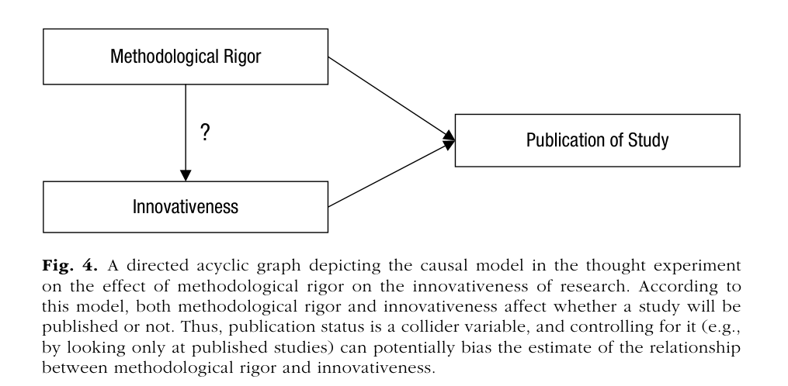
Among published studies, rigor and innovation look like a trade-off, even if they are unrelated overall.
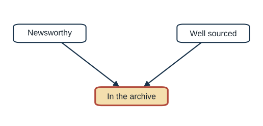
If editors publish stories that are newsworthy or well sourced, the archive shows a false trade-off.
Selection into the sample is conditioning on a collider.
Source: Rohrer (2018), Figure 4, p. 35; Week 9 Berkson example (Bergstrom and West 2021, ch. 6).
A back-door path starts with an arrow into the treatment and ends at the outcome.
To identify a causal effect:
If the DAG is right and every back door is blocked, the effect is identified, even with observational data.
Source: Rohrer (2018), p. 31 (Pearl’s back-door criterion).
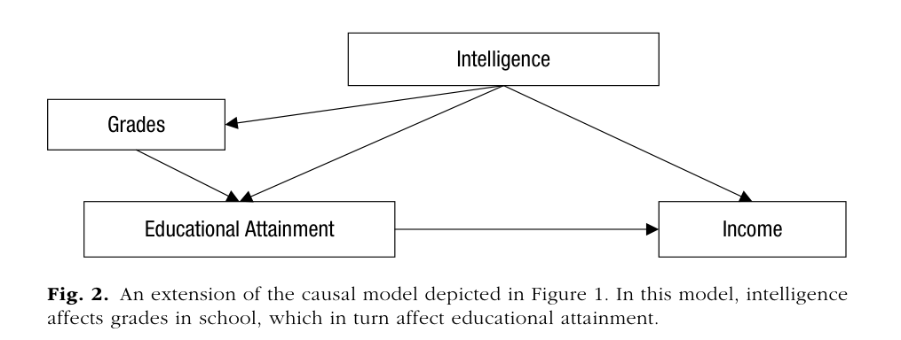
List every path from Educational Attainment to Income. Then decide:
| Control for… | Effect identified? |
|---|---|
| Nothing | No |
| Grades only | No: one back door still open |
| Intelligence | Yes |
| Intelligence and grades | Yes: grades are unnecessary |
Source: Rohrer (2018), Figure 2, pp. 30–31.
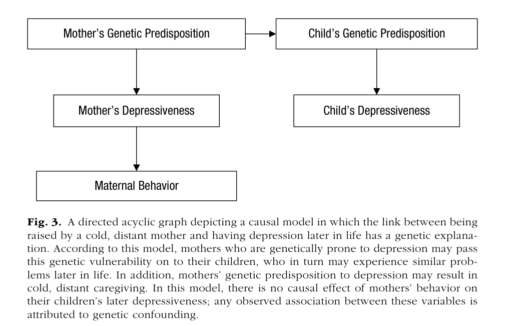
Children who were rarely held by their mothers are more depressed as adults. Find the back-door path. What could block it?
Source: Rohrer (2018), Figure 3, pp. 33–34, adapted from Turkheimer (2000).
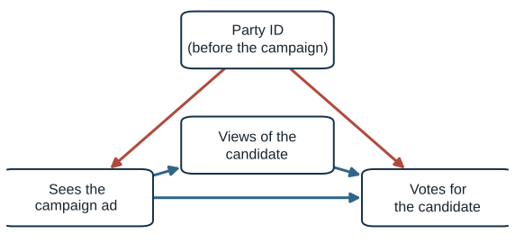
We want the total effect of seeing a campaign ad on voting for the candidate.
| Control for… | Effect identified? |
|---|---|
| Nothing | No: back door through party ID open |
| Party ID | Yes |
| Views of the candidate | No: back door open, and part of the effect removed |
| Party ID and views | No: only the direct effect remains |
Instead of measuring every confounder, choose a design in which the back door does not exist.
Source: Rohrer (2018), p. 34; Turkheimer and Harden (2014).
Facebook deactivation
Problem: heavy users differ from light users.
Design: randomly pay users to deactivate for the 4 weeks before the 2018 midterms.
Result: less polarization and news knowledge, higher well-being; 80% said it was good for them.
Randomizing the news
Problem: editors cover what audiences already care about.
Design: 48 outlets published stories on dates the researchers randomly assigned.
Result: discussion of the topic on social media rose about 62.7% of a day’s volume (about 13,166 posts over the week).
Sinclair acquisitions
Problem: Sinclair chooses which stations to buy.
Design: difference-in-differences: 10 acquired stations vs. other programs in the same markets.
Result: national politics coverage up about 25%, local down about 10%, slant shifted right.
Sources: Allcott, Braghieri, Eichmeyer, and Gentzkow (2020), AER; King, Schneer, and White (2017), Science; Martin and McCrain (2019), APSR.
“It is not true that simply adding more covariates will always improve the estimate of a causal effect.”
Confounders cause the treatment. Mediators and colliders are caused by it: they are post-treatment variables.
Rule of thumb: do not control for post-treatment variables.
Source: Rohrer (2018), p. 34; Rosenbaum (1984); Rubin (1974).
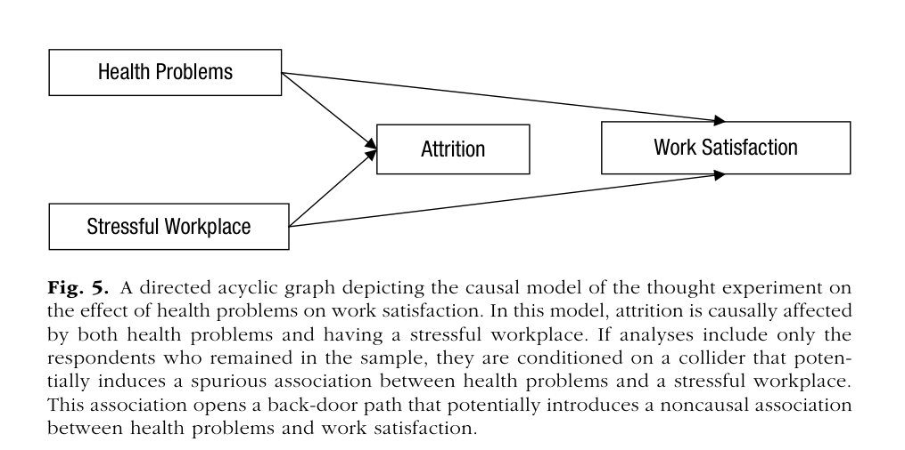
Rohrer’s endogenous selection: the sample itself conditions on a collider.
Source: Rohrer (2018), pp. 36–37, Figure 5.
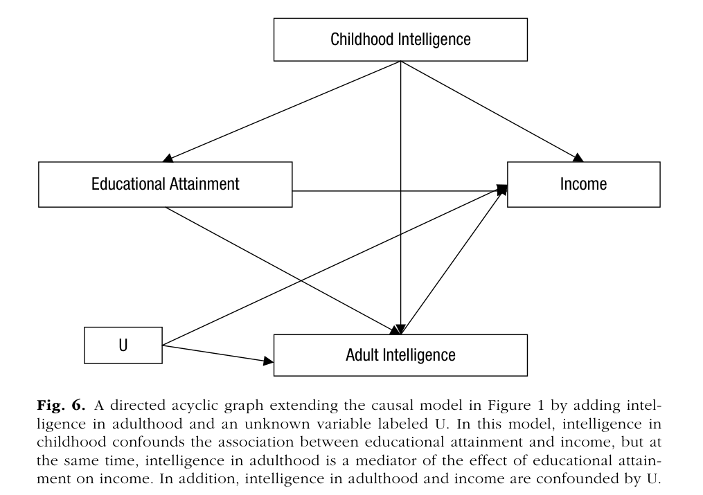
Education raises adult intelligence, which raises income.
Controlling for adult intelligence:
Control for childhood intelligence; leave adult intelligence alone.
Source: Rohrer (2018), Figure 6, pp. 37–38.
Classic mediation analysis (Baron and Kenny; Hayes’s PROCESS) estimates a direct effect by controlling for the mediator.
Rohrer: this can be biased even in a randomized experiment, unless the mediator is also randomized.
Randomizing X closes back doors into X. It does nothing about back doors between the mediator and Y.
Source: Rohrer (2018), p. 38; Hayes (2009), Communication Monographs; Bullock, Green, and Ha (2010).
| We want the effect of… | on… | Should we control for… | Role | Control? |
|---|---|---|---|---|
| taking statins | dying of a heart attack | cholesterol, measured before starting statins | confounder | yes |
| taking statins | dying of a heart attack | cholesterol, measured after starting statins | mediator | no |
| a study’s rigor | its innovativeness | whether it was published | collider | no |
| education | income | chess skill, a proxy for adult intelligence | descendant of a mediator | no |
| attending a selective college | earnings | which colleges admitted the student | proxy for a confounder | yes, if it captures ability well |
Same variable, different role: cholesterol is a confounder or a mediator depending on when it is measured.
Sources: Thinking Clearly with Data, ch. 9, pp. 181–182 (statins); Rohrer (2018), pp. 35 and 38 (publication, chess); Dale and Krueger (2002).
| We want the effect of… | on… | Should we control for… | Role | Control? |
|---|---|---|---|---|
| watching cable news | political knowledge | interest in politics, measured before | confounder | yes |
| exercising | weight | calories burned | mediator | no |
| parents’ income | child’s test scores | which school the child attends | mediator | no |
| ad spending | sales | time of year (holiday season) | confounder | yes |
| a candidate’s looks | a candidate’s competence | winning the election | collider | no |
| We want the effect of… | on… | Should we control for… | Role | Control? |
|---|---|---|---|---|
| seeing misinformation | vaccine hesitancy | partisanship, measured before | confounder | yes |
| a college degree | income | the job the person took after college | mediator | no |
| social media use | depression | hours of sleep after using social media | mediator | no |
| a post’s humor | a post’s accuracy | the post went viral | collider | no |
| a newspaper’s ownership | its local coverage | the size of the city it serves | confounder | yes |
Ask: does it come before the treatment and affect both? Sit between them? Or is it caused by both?
Identification ≠ estimation
The right control set still needs the right functional form. A quadratic confounder controlled linearly leaves residual confounding.
Measurement error
A noisy confounder is only partly controlled. In large samples, false-positive rates can approach 100%.
The DAG is an assumption
State it openly. Check robustness across plausible DAGs. Triangulate across designs.
Source: Rohrer (2018), pp. 31–33, 38–40; Westfall and Yarkoni (2016).
Part 5 of 5 · Back to the cases
Draw it, find the back door, and say what evidence would close it.
Suppose you had only one survey, with no design. In pairs, take one case: social media, smoking and COVID, TV, or elite colleges.
Social media: reverse causation; timing helps
Smoking & COVID: a collider; study everyone, not just patients
TV: a fork through family background; TV’s arrival cuts it
College: self-selection; matching on admissions blocks it
Different structures, different fixes: break the back door, or stop conditioning.
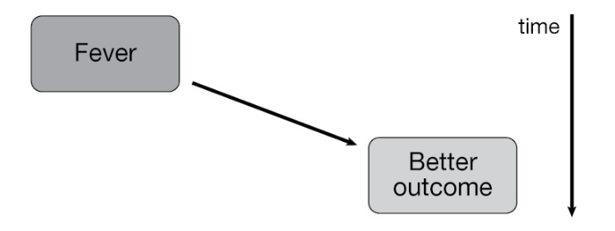
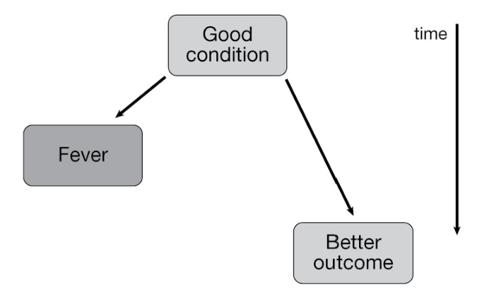
Patients who mount a fever are more likely to survive a bloodstream infection.
Does fever help? Or are patients in better condition both more able to mount a fever and more likely to recover?
Correlation alone cannot tell these DAGs apart.
Source: Bergstrom and West (2021), ch. 4, Figures 12a–b.
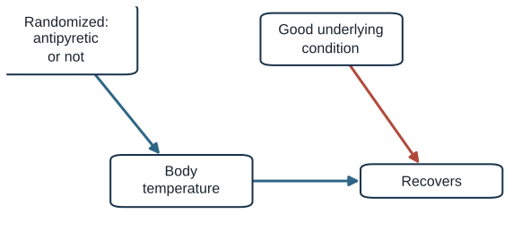
Potential outcomes say what effect we want. The baseline difference says why the correlation misleads. The DAG says which alternative each design rules out.
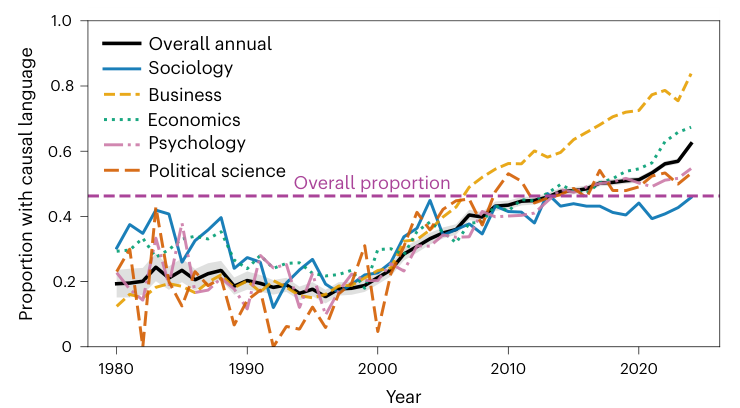
An LLM classified 194,631 cross-sectional articles, 1980–2024.
46.3% used causal language about their own findings in the title or abstract.
Roughly 20% until 2000; over 60% by 2024.
2024: business 84%, economics 67%, psychology 55%, political science 53%, sociology 46%.
Source: Isch, Dörr, Fasching, Jennings, and Watts (2026), Nature Human Behaviour, Figure 2.
Higher-impact journals
Above-median impact: 54.4% causal, vs. 43.3% below.
Even the Journal of Quantitative Description, which bans causal claims: 12.9%.
Behind careful abstracts
Among articles whose abstracts made only descriptive claims, 44% still made an unhedged causal claim in the full text.
In the framing sections
Unhedged causal claims appeared in the introduction (60.0%) and discussion (55.1%), but rarely in the methods (6.1%).
The causal claim usually lives where authors explain why the study matters, not where they describe what they did.
Source: Isch et al. (2026), pp. 3–4, Figures 3–4.
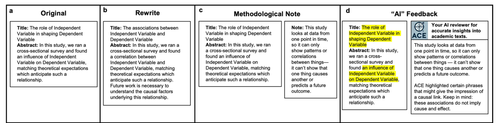
N = 1,105 readers, randomly assigned. “This study provides causal evidence” (1–7):
Original 5.1 · rewrite −0.4 · note −0.5 · AI feedback −0.8
Readers’ own summaries that were causal:
Original 71% · rewrite 50% · note 64% · AI 59%
Source: Isch et al. (2026), pp. 4–5, Extended Data Fig. 5 and Extended Data Table 1.
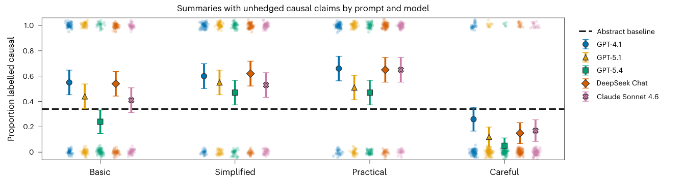
Five models each summarized 100 abstracts under four prompts.
Abstracts: 34% unhedged causal. “Simplified” and “practical” summaries: about 55–59%.
A “careful” prompt brought it below the abstracts.
GPT-4.1 rated the abstracts only 3.1/7 as causal evidence, yet 99.3% of its own summaries of them were causal.
Source: Isch et al. (2026), pp. 5–7, Figure 6a; Extended Data Tables 2–3.
Cross-sectional papers should use associational wording, and readers benefit from explicit notes about design limits.
“Avoiding causal language” hides the causal question and the assumptions behind it. State the causal goal and the DAG openly.
Isch’s own data: the explicit design note moved readers more than the associational rewrite. What should a cross-sectional paper say?
Descriptive write-ups drift into causal language: “coverage drives…”, “outlets respond to…”, “framing shapes…”
Sinclair shows when coded text can carry a causal claim: when a design, not the coding, removes the selection.
Name one correlation in your own area that is usually read causally.
Draw the DAG that would make it non-causal.
COMM 5220 • Week 10
Case 1: Three stories, one correlation
Social media → depression
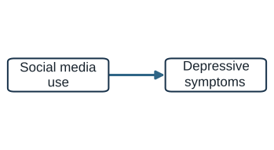
Depression → social media
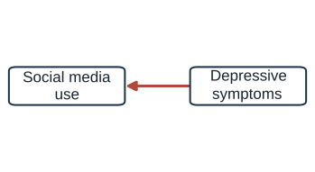
A common cause produces both
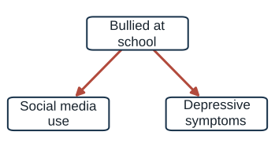
Following 594 adolescents over two years: depressive symptoms predicted later social media use (among girls). Social media use did not predict later depression.
Timing can separate stories that a single survey cannot.
Source: Heffer, Good, Daly, MacDonell, and Willoughby (2019), Clinical Psychological Science 7(3): 462–470; see also Orben and Przybylski (2019), Nature Human Behaviour.